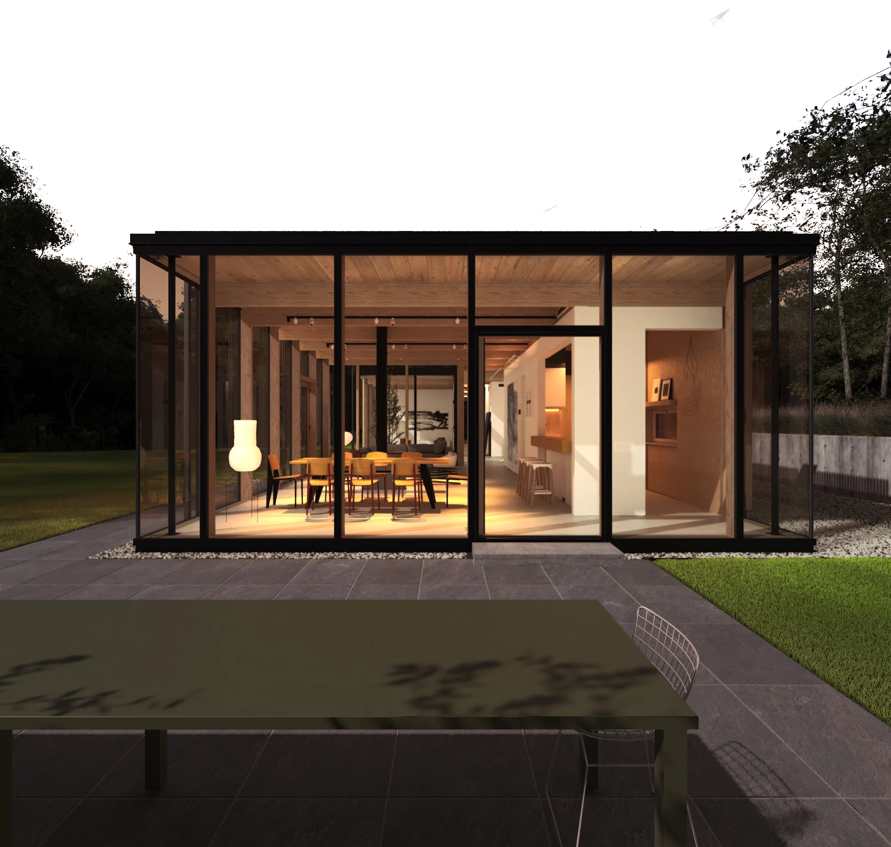
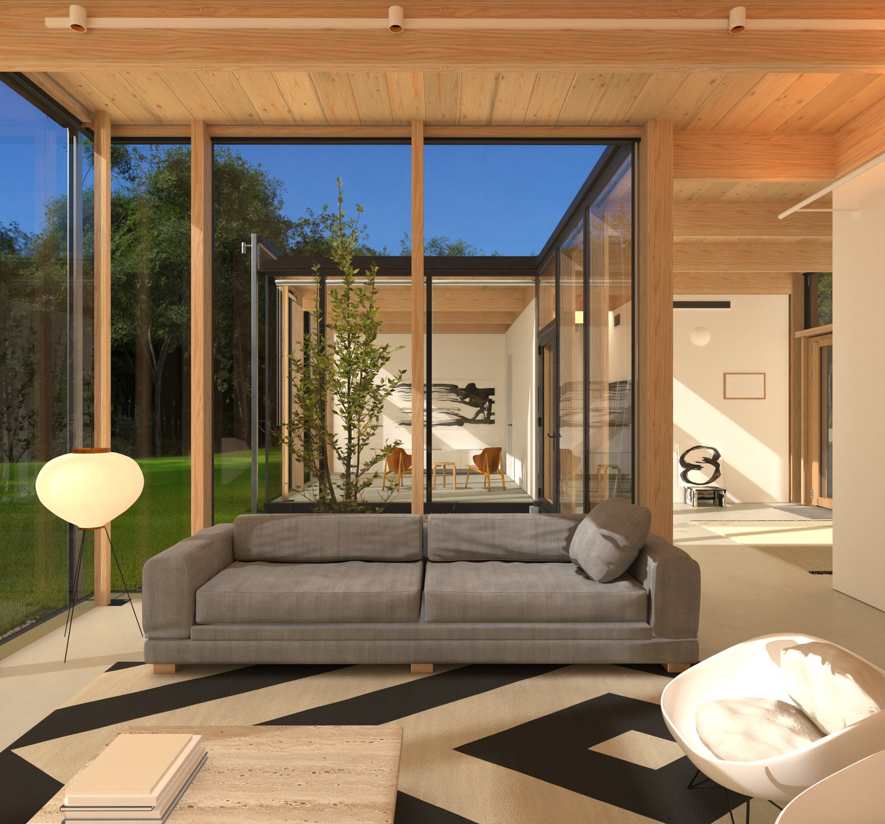

Casa
Wuehrer

Réplica de estudio
de una obra de Engelking Architects
Amagansett, Nueva York, 2018
232m² en una planta,
24 módulos de madera
↓
24 módulos de madera
Imagen generada de la réplica, con luz de atardecer ajustada. No es una fotografía de la obra.
Obra original
Engelking Architects
Casa Wuehrer, Amagansett, Nueva York, 2018. Esta página es una réplica de estudio, hecha desde lo publicado. No es la obra construida ni material de sus autores.
232m² netos
24módulos en una barra
1,524m por módulo
3,66m de altura, una planta

hacia el patio
La obra
- Obra
- Casa Wuehrer (Wuehrer House)
- Arquitectos
- Engelking Architects · Jerome Engelking, AIA
- Lugar
- Amagansett, East Hampton, Nueva York (EE. UU.)
- Terminada
- 2018
- Área
- 232 m² netos · 260 m² brutos
- Módulo
- 5 pies (1,524 m) · altura 12 pies (3,66 m), una planta
- Estructura
- Pino amarillo del sur laminado; columna y montante del muro cortina en una sola pieza
- Fachadas
- Muro cortina Raico THERM+ H-I; persianas de pino termotratado al oeste; listones de cedro al este
- Programa
- Barra de 24 módulos: zona social al oeste, dormitorios al este, patio de entrada al centro
Créditos
de la obra
- Arquitecta de registro
- Kirsten Youngren
- Estructura
- Stutzki Engineering
- Instalaciones
- Fusion Systems
- Fachada estructural
- IC2 technologies
- Madera laminada
- Art Massif
- Montaje del marco
- Les Constructions FGP
- Fotografía
- Nic Lehoux
La réplica
Réplica de estudio hecha desde lo publicado (ArchDaily, Architect Magazine, The Plan, Architectural Record) y las fichas de los fabricantes. No es la obra construida ni material de sus autores: sirve para estudiar la casa y probar el método. Lo que no se publicó va marcado como propuesta.